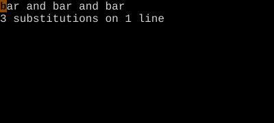

Substitute (:s)
The most powerful single command in Vim.
:s/pattern/replacement/flagsis the workhorse for text transformation. Combine with ranges (%for whole file) and flags (gfor global,cfor confirm,ifor case-insensitive).
Substitute
:s is Vim's find-and-replace. The full form is:
:[range]s/pattern/replacement/flagsMaster it and you can rewrite a file in one keystroke.
| Form | Meaning |
|---|---|
:s/foo/bar/ |
First match on current line |
:s/foo/bar/g |
All matches on current line |
:%s/foo/bar/g |
All matches in whole file |
:%s/foo/bar/gc |
…with confirmation per match |
:'<,'>s/foo/bar/g |
All matches in last visual selection |
:5,10s/foo/bar/g |
Lines 5-10 |
:.,$s/foo/bar/g |
Cursor line to EOF |
:g/TODO/s/foo/bar/g |
Only on lines matching TODO |
Flags
| Flag | Effect |
|---|---|
g |
Replace all matches on each line (not just first) |
c |
Confirm each match (y/n/a/q/l) |
i |
Case-insensitive for this command |
I |
Case-sensitive for this command |
e |
Errors suppressed (no "pattern not found") |
n |
Don't substitute — just count matches |
& |
Reuse flags from last :s |
Replacement magic
| In replacement | Means |
|---|---|
& |
The whole match |
\0 |
Same as & |
\1, \2… |
Capture groups from \(...\) |
\u |
Uppercase next character |
\U |
Uppercase until \E |
\l, \L |
Lowercase versions |
\r |
Newline (for splitting lines) |
~ |
Reuse previous replacement |
Worked example — :s/foo/bar/g
Find and replace on the current line.

Range :%s/.../.../g applies to whole file. With c flag you confirm each.
Watch
- 📺 #0406 :s/old/new/g Substitute All (not yet published)
- 📺 #0415 :tabnew New Tab (not yet published)
See also: Ex Ranges, Global (:g) and Vglobal (:v), Pattern Search